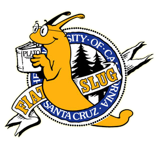

Hi! My name is Julian Benjamin Cayanan, and I am studying Computer Science at College of San Mateo. I recently completed my courses at CSM and I am transferring to University of Santa Cruz! This portfolio is for my CIS 111: Intro to Web Programming class at CSM. Thank you for viewing my work! I have compiled some questions down below, please take a look. Also, contact me here! cayananbjulian@gmail.com
What CS coursework have you completed?
For College of San Mateo, I have completed these:
Which schools have you attended?
I have attended San Mateo High School and College of San Mateo. I am set to attend University of Santa Cruz in the Fall 2023! (I am very excited :D)
What's the name of your dogs?
Luna and Milo <3
What do you like to do in your free time?
Walk the dogs, bike, sleep, and play games. And I like eating :)
Anything else to add?
It's almost Friday :D